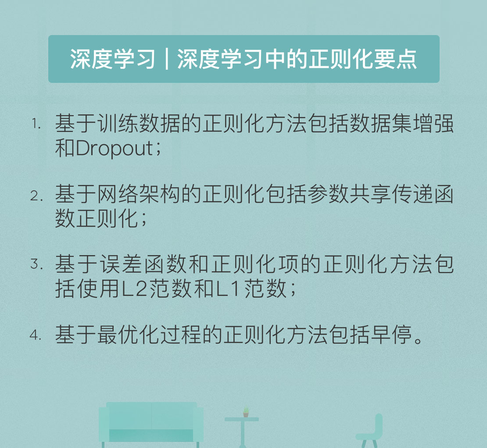

- 00 开篇词 人工智能：新时代的必修课.md.html
- 01 数学基础 九层之台，起于累土：线性代数.md.html
- 02 数学基础 月有阴晴圆缺，此事古难全：概率论.md.html
- 03 数学基础 窥一斑而知全豹：数理统计.md.html
- 04 数学基础 不畏浮云遮望眼：最优化方法.md.html
- 05 数学基础 万物皆数，信息亦然：信息论.md.html
- 06 数学基础 明日黄花迹难寻：形式逻辑.md.html
- 07 机器学习 数山有路，学海无涯：机器学习概论.md.html
- 08 机器学习 简约而不简单：线性回归.md.html
- 09 机器学习 大道至简：朴素贝叶斯方法.md.html
- 10 机器学习 衍化至繁：逻辑回归.md.html
- 11 机器学习 步步为营，有章可循：决策树.md.html
- 12 机器学习 穷则变，变则通：支持向量机.md.html
- 13 机器学习 三个臭皮匠，赛过诸葛亮：集成学习.md.html
- 14 机器学习 物以类聚，人以群分：聚类分析.md.html
- 15 机器学习 好钢用在刀刃上：降维学习.md.html
- 16 人工神经网络 道法自然，久藏玄冥：神经网络的生理学背景.md.html
- 17 人工神经网络 一个青年才俊的意外死亡：神经元与感知器.md.html
- 18 人工神经网络 左手信号，右手误差：多层感知器.md.html
- 19 人工神经网络 各人自扫门前雪：径向基函数神经网络.md.html
- 20 人工神经网络 看不见的手：自组织特征映射.md.html
- 21 人工神经网络 水无至清，人莫至察：模糊神经网络.md.html
- 22 深度学习 空山鸣响，静水流深：深度学习概述.md.html
- 23 深度学习 前方有路，未来可期：深度前馈网络.md.html
- 24 深度学习 小树不修不直溜：深度学习中的正则化.md.html
- 25 深度学习 玉不琢不成器：深度学习中的优化.md.html
- 26 深度学习 空竹里的秘密：自编码器.md.html
- 27 深度学习 困知勉行者勇：深度强化学习.md.html
- 28 深度学习框架下的神经网络 枯木逢春：深度信念网络.md.html
- 29 深度学习框架下的神经网络 见微知著：卷积神经网络.md.html
- 30 深度学习框架下的神经网络 昨日重现：循环神经网络.md.html
- 31 深度学习框架下的神经网络 左右互搏：生成式对抗网络.md.html
- 32 深度学习框架下的神经网络 三重门：长短期记忆网络.md.html
- 33 深度学习之外的人工智能 一图胜千言：概率图模型.md.html
- 34 深度学习之外的人工智能 乌合之众的逆袭：集群智能.md.html
- 35 深度学习之外的人工智能 授人以鱼不如授人以渔：迁移学习.md.html
- 36 深度学习之外的人工智能 滴水藏海：知识图谱.md.html
- 37 应用场景 你是我的眼：计算机视觉.md.html
- 38 应用场景 嘿, Siri：语音处理.md.html
- 39 应用场景 心有灵犀一点通：对话系统.md.html
- 40 应用场景 数字巴别塔：机器翻译.md.html
- 一键到达 人工神经网络复习课.md.html
- 一键到达 应用场景复习课.md.html
- 一键到达 数学基础复习课.md.html
- 一键到达 机器学习复习课.md.html
- 一键到达 深度学习之外的人工智能复习课.md.html
- 一键到达 深度学习复习课.md.html
- 一键到达 深度学习框架下的神经网络复习课.md.html
- 推荐阅读 我与人工智能的故事.md.html
- 新书 《裂变：秒懂人工智能的基础课》.md.html
- 直播回顾 机器学习必备的数学基础.md.html
- 第2季回归 这次我们来聊聊机器学习.md.html
- 结课 溯洄从之，道阻且长.md.html
- 课外谈 “人工智能基础课”之二三闲话.md.html
- （课外辅导）人工神经网络 拓展阅读参考书.md.html
- （课外辅导）数学基础 拓展阅读参考书.md.html
- （课外辅导）机器学习 拓展阅读参考书.md.html
- （课外辅导）深度学习 拓展阅读参考书.md.html
- 捐赠
24 深度学习 小树不修不直溜：深度学习中的正则化
正则化（Regularization）作为抑制过拟合的手段，是机器学习和深度学习之中必不可少的环节，具有举足轻重的地位。好的机器学习算法不仅要在训练集上表现出色，当推广到未知的测试数据时，其优良的性能依然能够得以保持。正则化就是一类通过显式设计降低泛化误差，以提升算法通用性的策略的统称。由于深度学习中涉及的参数众多，正则化就变得尤为重要。
正则化被定义为对学习算法的修改，这些修改的目的在于减少泛化误差。通常说来，泛化误差的下降是以训练误差的上升为代价的，但有些算法也能兼顾泛化误差和训练误差的良好性能。
正则化处理可以看成是奥卡姆剃刀原则（Occam’s razor）在学习算法上的应用。奥卡姆剃刀原则的表述是：“当两个假说具有完全相同的解释力和预测力时，以那个较为简单的假说作为讨论依据。”在机器学习中，正则化处理得到的正是更加简单的模型。
从概率论角度看，许多正则化技术对应的是在模型参数上施加一定的先验分布，其作用是改变泛化误差的结构。正则化是对欠拟合和过拟合的折中，在不过度增加偏差的情况下显著减少方差。正则化能够改变数据分布，让通过模型得到的数据分布尽可能和真实的数据生成过程相匹配。
虽然目前在深度学习中应用的正则化方式称得上“八仙过海，各显神通”，却并不存在能够系统描述这些方法、并进一步指导设计的通用主线。因此，要从通观全局的角度看待正则化处理，还是要“不忘初心”，从根本目的着眼。
机器学习的任务是拟合出一个从输入\(x\)到输出\(y\)的分布，拟合的过程是使期望风险函数最小化的过程。正则化处理使待最小化的函数中既包含结构化的误差函数，也包含人为引入的正则化项。由于未知分布的期望风险不能直接求解，因而需要引入训练数据集，以在训练数据集上计算出的经验风险来近似期望风险，并通过经验风险最小化实现期望风险最小化。
以上就是学习算法的整体流程，也是正则化大展拳脚的主战场，正则化的处理就是针对学习算法中的不同变量来展开的。这样看来，正则化策略就可以分为以下几类：
- 基于训练数据（data）的正则化
- 基于网络架构（network architecture）的正则化
- 基于误差函数（error function）的正则化
- 基于正则化项（the regularization term）的正则化
- 基于最优化过程（optimization）的正则化
训练模型的质量很大程度上取决于训练数据。 除了选择噪声较小的训练数据外，还可以通过正规化来提升训练数据的质量。正则化处理数据的一个目的是执行预处理和特征提取，从而将特征空间或数据分布修改为其他形式； 另一个目的是通过生成新样本来创建具有更大容量、甚至是无限容量的增强数据集。这两个目的之间相互独立，因而可以结合起来使用。
对训练数据正则化的做法是在训练数据集上施加变换，从而产生新的训练数据集。变换的形式是以满足某种概率分布的随机变量为自变量的函数，最简单的实例就是向数据添加随机的高斯噪声。由于提升机器学习模型泛化性能最直接的办法就是使用更多的数据进行训练，因而使用随机参数的变换可以用于生成“假”数据，这种方法被称为数据集增强（data augmentation）。
数据集增强的对象通常只包括输入层和隐藏层，而不包括输出层。这样做的效果是将训练数据集映射到一个新的概率分布上，并用这个新分布来计算经验风险函数。变换中参数的随机性使我们可以在不同的参数之下生成多组新数据，从而通过数据量的增加来减小期望风险和经验风险之间的差别。
除了数据集增强外，另一种针对训练数据的正则化方法是 Dropout。Dropout是一种集成方法，通过结合多个模型来降低泛化误差。之所以说Dropout属于基于训练数据的正则化，是因为它构造不同的数据集来训练不同的模型，每个数据集则通过对原始数据集进行“有放回采样”得到。
Dropout的关键想法是在训练期间从神经网络中随机丢弃神经元及其连接，得到简化的网络。而在测试时，一个简单的小权重网络就可以逼近所有这些简化网络的预测的平均效果。其优点在于计算简单方便，同时还具有对不同的模型和训练过程的普适性。但Dropout对训练集容量的要求很高，少量训练样本并不能发挥其优势。
从输入到输出的映射必须具有某些特质才能很好地适应数据，而对输入-输出映射进行假设的方法正对应着网络结构的选择，这激发了基于网络架构的正则化方法。对映射的假设既可以关注深度网络中不同层次的具体操作，也可以关注层与层之间的连接方式。基于网络架构的正则化通常会简化关于映射的假设，再让网络架构逐步逼近简化后的映射。这限制了模型的搜索空间，为找到更好的解提供了可能性。
参数共享（weight sharing）是一类重用参数的正则化方法。通过强迫某些参数相等，可以让不同模型共享唯一的参数，从而让它们对相似的输入产生相似的输出。如果放宽参数共享的条件，使它们不必完全相等而是相互接近，对应的就是对参数范数添加正则化项。常用的参数共享方法是将一个监督学习模型的参数正则化，令其接近另一个无监督学习的模型，那么这个无监督学习模型就可以匹配监督模型的参数。
另一种针对网络架构的处理是对传递函数的正则化（activation regularization）。一些传递函数是专门为正则化设计的，比如在Dropout中使用的maxout单元，它能在测试时更精确地近似模型集合预测结果的几何平均值。而通过添加噪声，原始的确定传递函数就可以被泛化为随机模型，其分布特性也就可以被利用起来。
基于误差函数的正则化和基于正则化项的正则化可以放在一起讨论。理想情况下，误差函数应当适当地反映算法的性能，并体现出数据分布的一些特点（比如均方误差或交叉熵）。对误差函数进行正则化就相当于添加额外的学习任务，从而导致其目标发生变化，这部分变化就会体现在误差函数中额外的正则化项上。因而在大部分情况下，对基于正则化项的正则化的讨论就包含了基于误差函数的正则化。
正则化项也叫做惩罚项。与误差函数不同，正则化项与目标无关，而是用于表示所需模型的其他属性。误差函数表示的是算法输出与目标输出之间的一致性，正则化项表示的则是关于映射关系的额外的假设。 这一特点决定了正则化项的值可以通过未标记的测试样本来计算，利用测试数据改进学习模型。
常用的正则化项是权重衰减项（weight decay）。深度学习中的参数包括每个神经元中的权重系数和偏置。由于每个权重会指定两个变量之间相互作用的方式，因而拟合权重所需要的数据量要比拟合偏置多得多。相比之下，每个偏置只控制一个变量，即使不对它做正则化也不会产生太大方差，正则化的方式不对反而还会增加算法的偏差。这是正则化的对象只包括权重而不包括偏置的原因。
在权重衰减中，正则化项是以范数的形式表示的，常用的范数包括\(L ^ 2\)范数和\(L ^ 1\)范数。回忆一下，当这两种范数作为正则化项被应用在线性回归中时，分别对应着岭回归和LASSO回归。
\(L ^ 2\)范数作为正则化项时，其作用是使权重系数更加接近原点。引入权重衰减后，在每一步的梯度更新之前，权重向量都会被收缩。整体来看，这使得在显著减小目标函数方向上的权重保留完好，无益于目标函数减小的方向所对应的分量则会因正则化而被逐渐地衰减掉。从泛化误差的角度来说，\(L ^ 2\)范数能够感知具有较高方差的输入，与这些输入特征相关的权重则被收缩。
相比之下，\(L ^ 1\)范数和\(L ^ 2\)范数有本质上的区别。\(L ^ 1\)正则化得到的是稀疏的解，它将一部分较小的权重直接砍掉。这样做可以从可用的特征子集中选择出有意义的特征，从而简化学习问题。
最后一类正则化方法是基于最优化过程的正则化。根据其作用阶段的不同，这类正则化方法可以分为三种：对初始化（initialization）的正则化，对参数更新（weight update）的正则化，对终止条件（termination）的正则化。对初始化的正则化影响的是权重系数的最初选择，这既可以通过在特定的概率分布中选择初始参数完成，也可以经由预训练实现。对参数更新的正则化则包括对更新规则的改进和对权重参数的过滤。
早停（early dropping）是一类重要的正则化方法，它是针对终止条件的正则化。当训练的表示能力过强时，泛化误差会呈现出U形：随着训练时间的增加先降低再升高。这意味着只有返回使泛化误差最低的参数集设置，才能得到更低的泛化误差。当测试集上的泛化误差在预先指定的循环次数内没有改善时，训练就会终止，这种策略就是早停。
早停的简单性和有效性使它成为深度学习中应用最广泛的正则化方法。它不需要改变训练过程，也就不会影响到学习动态，唯一要注意的问题就是要避免陷入局部最优解。早停的正则化效果在数学上也有解释，在简单的模型下，早停和\(L ^ 2\)正则化是等价的。
需要注意的是，以上的分类方式并不是互斥的，一种正则化方法通常针对的是学习算法中的多个变量。做出分类的目的是帮助你更好地理解正则化的设计思路。此外，前文对具体正则化方法的介绍也是挂一漏万。正则化是深度学习研究中最活跃的领域之一，如果要深入了解每种方法，最好的办法莫过于阅读原始文献。
今天我和你分享了深度学习中实现正则化的思路，其要点如下：
基于训练数据的正则化方法包括数据集增强和Dropout；
基于网络架构的正则化方法包括参数共享和传递函数正则化；
基于误差函数和正则化项的正则化方法包括使用\(L ^ 2\)范数和\(L ^ 1\)范数；
基于最优化过程的正则化方法包括早停。
既然正则化方法可以基于学习算法中的多个变量来实现，那么你觉得那种方式能够达到最好的抑制过拟合效果呢？
欢迎发表你的观点。

© 2019 - 2023 Liangliang Lee. Powered by gin and hexo-theme-book.